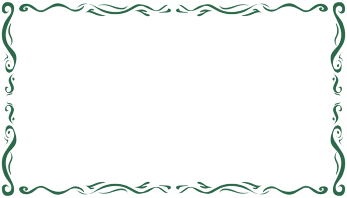

Welcome to my little portfolio project!
My name is Arham Nadeem, and I'm a passionate junior at the University of Illinois at Chicago, majoring in Computer Science with a concentration in Software Engineering. Growing up in the vibrant city of Chicago, I've always been fascinated by technology and its potential to transform lives. This curiosity led me to immerse myself in coding and programming, where I've honed my skills in languages such as Python, C, C++, HTML, and JavaScript.
I graduated from Frederick Von Steuben Metropolitan Science Center, where my interest in technology first took root. My journey began with Python, a language that opened my eyes to the endless possibilities of coding. As I delved deeper, learning additional languages, I became captivated by the way simple blocks of code could seamlessly integrate to create complex, dynamic systems that power the world around us. Throughout my academic journey at UIC, I've undertaken rigorous coursework that has strengthened my problem-solving abilities and technical expertise.
I am driven by a desire to create innovative solutions and make a positive impact through technology. My goal is to secure an internship in Software Engineering, Data Science, or tech-related research where I can apply my knowledge, learn from industry professionals, and contribute to groundbreaking projects. I am a quick learner, a proactive problem solver, and a collaborative team player who thrives in dynamic environments.
Below, you can find more details about the relevant courses I've taken and the programming languages I excel in. For my resume, contact information, or to learn more about my journey, please scroll down. Thank you for visiting, and I hope you have a fantastic day! Let's make every moment count!
My name is Arham Nadeem, and I'm a passionate junior at the University of Illinois at Chicago, majoring in Computer Science with a concentration in Software Engineering. Growing up in the vibrant city of Chicago, I've always been fascinated by technology and its potential to transform lives. This curiosity led me to immerse myself in coding and programming, where I've honed my skills in languages such as Python, C, C++, HTML, and JavaScript.
I graduated from Frederick Von Steuben Metropolitan Science Center, where my interest in technology first took root. My journey began with Python, a language that opened my eyes to the endless possibilities of coding. As I delved deeper, learning additional languages, I became captivated by the way simple blocks of code could seamlessly integrate to create complex, dynamic systems that power the world around us. Throughout my academic journey at UIC, I've undertaken rigorous coursework that has strengthened my problem-solving abilities and technical expertise.
I am driven by a desire to create innovative solutions and make a positive impact through technology. My goal is to secure an internship in Software Engineering, Data Science, or tech-related research where I can apply my knowledge, learn from industry professionals, and contribute to groundbreaking projects. I am a quick learner, a proactive problem solver, and a collaborative team player who thrives in dynamic environments.
Below, you can find more details about the relevant courses I've taken and the programming languages I excel in. For my resume, contact information, or to learn more about my journey, please scroll down. Thank you for visiting, and I hope you have a fantastic day! Let's make every moment count!
Relevant Courses Taken
- CS 111: Program Design I
- CS 141: Program Design II
- CS 151: Mathematical Foundations of Computing
- CS 211: Programming Practicum
- CS 251: Data Structures & Algorithms
- IE 342: Probability & Stat for Engineering
- CS 261: Machine Organization
Languages I Know
- Python
- HTML
- C
- C++
- JavaScript